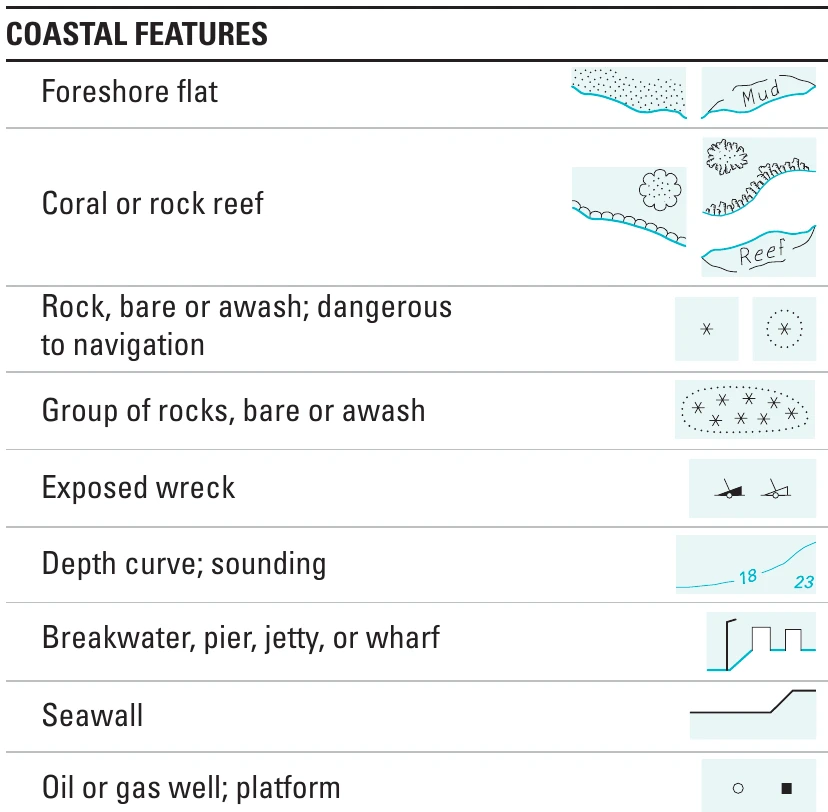

Komponen dan
kelengkapan peta
Sebuah peta tidak hanya menunjukkan lokasi. Judul, simbol, legenda, dan informasi pendukung membantu pembaca memahami apa yang dipetakan serta batas penggunaannya.
4.1 Tujuan dan agenda
Setelah mengikuti pertemuan ini, mahasiswa diharapkan mampu:
- Mengidentifikasi komponen yang terdapat pada sebuah peta.
- Menjelaskan fungsi setiap komponen dalam membantu pembaca.
- Menilai kelengkapan peta berdasarkan tujuan dan kebutuhan penggunanya.
| Waktu | Kegiatan |
|---|---|
| 0–20 menit | Perkenalan pengajar, absensi, dan pengalaman mahasiswa menggunakan peta. |
| 20–30 menit | Tujuan pembelajaran dan pengamatan peta pembuka. |
| 30–60 menit | Komponen peta dan contoh penggunaannya. |
| 60–80 menit | Analisis bersama beberapa contoh peta. |
| 80–95 menit | Latihan kelompok dan diskusi. |
| 95–100 menit | Kuis singkat dan ringkasan. |
4.2 Mulai dengan membaca peta
Amati peta berikut sebelum membaca pembahasannya. Informasi apa yang dapat dikenali langsung? Informasi apa yang masih memerlukan penjelasan?

Sumber: Physical World Map, CIA World Factbook, via Wikimedia Commons.
- Apa yang tampaknya ditunjukkan oleh variasi warna?
- Dapatkah tinggi atau kedalaman tertentu diketahui hanya dari warna tersebut?
- Informasi tambahan apa yang diperlukan jika peta dipakai untuk mengukur jarak?
Warna dapat memberi kesan relief, tetapi nilai ketinggian atau kedalaman tidak dapat ditentukan secara pasti tanpa penjelasan simbol. Tidak adanya suatu komponen belum tentu merupakan kesalahan: penilaian harus mempertimbangkan tujuan peta dan konteks penyajiannya.
4.3 Komponen dan fungsinya
Komponen berikut merupakan panduan untuk membaca dan memeriksa peta, bukan daftar unsur yang wajib ditampilkan pada semua jenis peta. Pembahasan mengacu pada Uli Ingram, OpenALG, Bab 2: Map Elements and Design Principles dan Manuel Gimond — Good Map Making Tips.
4.3.1 Judul
Judul menjelaskan tema utama peta. Lokasi dan waktu data perlu disebutkan ketika keduanya penting untuk memahami informasi yang ditampilkan.
Masih terlalu umum: Peta Terumbu Karang
Lebih spesifik: Tutupan Karang Hidup di Perairan Pulau A Tahun 2025
Judul kedua memperjelas variabel yang dipetakan, lokasi, dan waktunya. Namun, judul yang panjang belum tentu lebih baik: pilih informasi yang benar-benar diperlukan pembaca.
4.3.2 Muka peta dan bingkai
Muka peta adalah bagian yang menampilkan informasi geografis, termasuk objek, simbol, dan hubungan keruangannya. Bingkai membantu membatasi area penyajian. Bingkai peta tidak sama dengan garis batas administrasi atau batas wilayah penelitian.
4.3.3 Simbol dan legenda
Simbol mewakili objek atau fenomena geografis. Simbol titik dapat digunakan untuk lokasi, garis untuk objek memanjang, dan area untuk wilayah. Pilihan bentuk representasi juga dipengaruhi oleh skala: sebuah kota dapat digambarkan sebagai titik pada peta nasional, tetapi sebagai area pada peta yang lebih rinci.

Sumber: USGS, Topographic Map Symbols.
Legenda menghubungkan simbol pada peta dengan maknanya. Pada peta kuantitatif, pembaca perlu mengetahui variabel, satuan, serta batas kelas. Warna yang sama dapat memiliki arti berbeda pada peta yang berbeda.
4.3.4 Skala
Skala menunjukkan hubungan jarak pada peta dengan jarak yang diwakilinya di permukaan bumi. Skala dapat disajikan sebagai angka, pernyataan verbal, atau batang grafis.
- Angka: 1 : 50.000.
- Verbal: 1 cm pada peta mewakili 500 m di lapangan.
- Grafis: batang dengan panjang dan satuan jarak tertentu.
Pada peta berskala 1 : 50.000, jarak sepanjang 4 cm mewakili:
4 × 50.000 cm = 200.000 cm = 2 km.
Jika gambar peta diperbesar atau diperkecil, pernyataan skala angka tidak otomatis tetap benar. Skala grafis ikut berubah jika gambar diubah ukurannya secara proporsional. Pada peta wilayah yang luas, distorsi proyeksi juga dapat menyebabkan skala bervariasi menurut lokasi.
4.3.5 Orientasi
Orientasi membantu pembaca memahami arah. Panah utara merupakan salah satu cara, tetapi bukan satu-satunya. Garis lintang dan bujur dapat menyediakan informasi arah. Jangan menambahkan panah utara hanya sebagai hiasan; pada peta dengan arah utara yang bervariasi di berbagai lokasi, satu panah dapat menyesatkan.
4.3.6 Koordinat, grid, dan proyeksi
Koordinat menyatakan posisi menggunakan suatu sistem acuan. Garis lintang dan bujur membentuk graticule, sedangkan grid dapat menunjukkan koordinat bidang. Keterangan sistem koordinat, datum, dan proyeksi penting ketika peta akan digunakan untuk penentuan posisi, pengukuran, atau penggabungan data. Garis grid saja tidak cukup untuk menjelaskan seluruh sistem acuannya.
4.3.7 Inset
Inset adalah peta tambahan berukuran lebih kecil. Inset dapat menunjukkan lokasi wilayah dalam cakupan yang lebih luas, memperbesar bagian yang padat, atau menampilkan wilayah terpisah. Periksa skala dan posisi setiap inset; jarak pada inset tidak boleh langsung dibandingkan dengan jarak pada peta utama jika skalanya berbeda.
4.3.8 Label dan informasi sumber
Label membantu mengenali nama tempat dan objek. Ukuran, posisi, serta kontras tulisan perlu mendukung keterbacaan tanpa menutupi informasi penting.
Sumber data, tahun data, pembuat peta, dan tanggal penerbitan membantu pembaca menilai asal-usul serta kesesuaian informasi. Tahun data tidak selalu sama dengan tahun pembuatan atau penerbitan peta. Jika beberapa sumber digabungkan, masing-masing perlu dijelaskan secara memadai.
4.4 Apakah semua komponen harus ada?
Tidak. Peta navigasi, peta untuk artikel ilmiah, dan peta tematik dunia memiliki kebutuhan yang berbeda. Dalam artikel, judul atau sebagian penjelasan dapat ditempatkan pada keterangan gambar. Pada peta tematik, legenda dan definisi variabel mungkin lebih penting daripada panah utara.
Gunakan tiga pertanyaan berikut:
- Tujuan: informasi atau keputusan apa yang ingin didukung peta?
- Pengguna: pengetahuan apa yang sudah dimiliki pembaca?
- Konteks: apakah peta berdiri sendiri atau disertai penjelasan?
Komponen dianggap perlu jika ketiadaannya menghambat penafsiran atau penggunaan peta. Baca juga Manuel Gimond — Good Map Making Tips.
4.5 Analisis contoh peta
A. Jumlah penduduk dan kepadatan penduduk

Sumber: U.S. Census Bureau, Population Size and Density, 1 Juli 2006.
Kedua peta memakai wilayah yang sama, tetapi menjawab pertanyaan berbeda. Jumlah penduduk menunjukkan banyaknya penduduk, sedangkan kepadatan menghubungkan jumlah penduduk dengan luas wilayah. Karena itu, legenda dan satuannya tidak dapat dipertukarkan.
- Bagaimana judul dan legenda membedakan kedua variabel?
- Mengapa wilayah dengan penduduk banyak belum tentu paling padat?
- Bagaimana Alaska dan Hawaii ditampilkan? Apakah keduanya berada pada posisi sebenarnya terhadap peta utama?
B. Cahaya malam

Sumber: NASA SVS, Earth at Night 2012.
Citra cahaya malam memperlihatkan pola cahaya yang teramati sensor. Pola terang tidak boleh langsung disebut sebagai kepadatan penduduk atau tingkat kesejahteraan tanpa data pendukung.
- Apa perbedaan antara variabel yang diamati dan kesimpulan yang ingin kita buat?
- Mengapa keterangan sensor dan waktu pengamatan penting?
- Informasi apa yang tidak bisa disimpulkan hanya dari citra ini?
C. Peta kolera John Snow

Sumber: Varian peta John Snow, wabah kolera London 1854.
Amati hubungan antara tanda kejadian, jaringan jalan, dan lokasi pompa air. Pola spasial dapat membantu menyusun dugaan, tetapi penjelasan sebab-akibat memerlukan bukti tambahan.
- Bagaimana tanda-tanda pada peta harus dibaca?
- Objek apa yang menjadi konteks bagi pola kejadian?
- Keterangan apa yang perlu disertakan agar pembaca baru tidak salah menafsirkan simbol?
D. Peta Minard

Sumber: Martin Grandjean, vektorisasi peta Charles Joseph Minard.
Peta ini menggabungkan jalur perjalanan, perubahan jumlah orang, serta informasi suhu pada bagian bawah. Lebar jalur bukan lebar jalan: maknanya perlu dibaca dari penjelasan peta.
- Variabel apa saja yang disampaikan melalui posisi, lebar, dan warna?
- Bagaimana bagian peta dan grafik saling melengkapi?
- Mengapa legenda atau penjelasan simbol sangat penting pada contoh ini?
E. Pemantauan terumbu karang

Sumber: NOAA Coral Reef Watch, Pacific Climate Update, 7 Maret 2024, Gambar 3.
Peta peringatan ini berkaitan dengan tekanan panas yang dapat memicu pemutihan karang. Warnanya bukan persentase tutupan karang dan bukan bukti langsung bahwa seluruh karang di suatu lokasi telah mengalami pemutihan.
- Bagaimana judul, tanggal, dan legenda menentukan cara membaca peta?
- Apa perbedaan peringatan berbasis pengamatan satelit dan hasil survei lapangan?
- Data tambahan apa yang dibutuhkan untuk menilai kondisi terumbu karang di lokasi tertentu?
4.6 Latihan dan diskusi
Sebuah peta akan digunakan untuk menjelaskan kondisi terumbu karang kepada pembaca yang belum mengenal lokasi kajian. Susun daftar informasi yang harus disertakan agar pembaca dapat memahami peta tersebut.
- Pilih satu contoh peta pada bab ini.
- Catat tema, pengguna yang mungkin dituju, dan konteks penggunaannya.
- Identifikasi komponen yang sudah tersedia.
- Pilih paling banyak tiga perbaikan yang paling penting.
- Jelaskan manfaat setiap perbaikan bagi pembaca, bukan hanya menyebut komponen yang belum ada.
Gunakan delapan menit untuk bekerja dalam kelompok dan enam menit untuk membandingkan hasil. Satu menit awal digunakan untuk penjelasan tugas.
| Komponen atau masalah | Bukti pada peta | Usulan perbaikan dan alasannya |
|---|---|---|
| Contoh: satuan legenda | Satuan tidak disebutkan | Tambahkan satuan agar nilai tidak disalahartikan |
4.7 Ringkasan dan evaluasi
- Komponen peta membantu pembaca mengenali tema, lokasi, makna simbol, dan konteks data.
- Legenda, satuan, serta tanggal dapat mengubah cara suatu peta ditafsirkan.
- Kelengkapan harus dinilai berdasarkan tujuan, pengguna, dan konteks.
- Menambah elemen tidak selalu membuat peta lebih jelas; setiap elemen harus memiliki fungsi.
1. Apakah setiap peta harus memiliki panah utara?
Tidak. Kebutuhannya bergantung pada tujuan dan penyajian peta. Informasi arah dapat tersedia melalui unsur lain, dan satu panah utara dapat tidak sesuai pada proyeksi tertentu.
2. Apa yang terjadi pada skala angka jika gambar peta diperbesar?
Hubungan ukuran pada tampilan berubah, sehingga skala angka semula tidak otomatis tetap berlaku. Skala grafis mengikuti perubahan ukuran jika diperbesar secara proporsional bersama petanya.
3. Mengapa tahun data dan tanggal penerbitan harus dibedakan?
Tanggal penerbitan menunjukkan kapan peta diterbitkan, sedangkan tahun data menjelaskan waktu kondisi yang diwakili. Peta yang baru diterbitkan dapat menggunakan data lama.
4.8 Referensi dan sumber gambar
Tautan berikut mengarah ke bacaan atau halaman sumber asli. Hak penggunaan gambar tetap mengikuti masing-masing sumber.
- Uli Ingram, OpenALG, Bab 2: Map Elements and Design Principles
- Kamyar Hasanzadeh, Lesson 1: Introduction to Cartography
- Eric Deluca dan Dudley Bonsal, Design and Symbolization
- U.S. Census Bureau, Population Size and Density, 1 Juli 2006
- USGS, Topographic Map Symbols
- Physical World Map, CIA World Factbook, via Wikimedia Commons
- Varian peta John Snow, wabah kolera London 1854
- Martin Grandjean, vektorisasi peta Charles Joseph Minard
- NASA SVS, Earth at Night 2012
- NOAA Coral Reef Watch, Pacific Climate Update, 7 Maret 2024, Gambar 3
- Manuel Gimond — Good Map Making Tips